CF—AI—001 / 2021
Early Dreams
A few words. Something unexpected.
Six experiments with Dream by WOMBO from December 2021. I fed it short prompts and kept the odd surprises: a singer made of spaghetti, a haunted meal, a room that almost makes sense. These are saved results from an early text-to-image tool, with the original prompts and prompt cards kept alongside them.

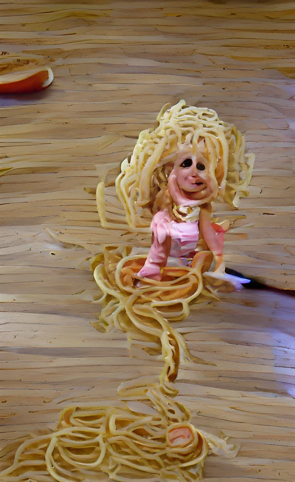
View original prompt card for Spaghetti Dolly Parton

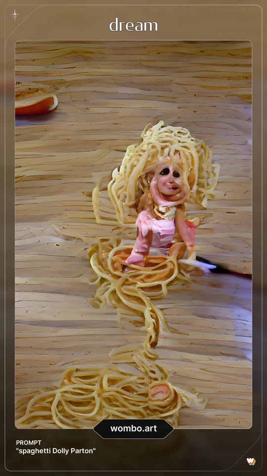

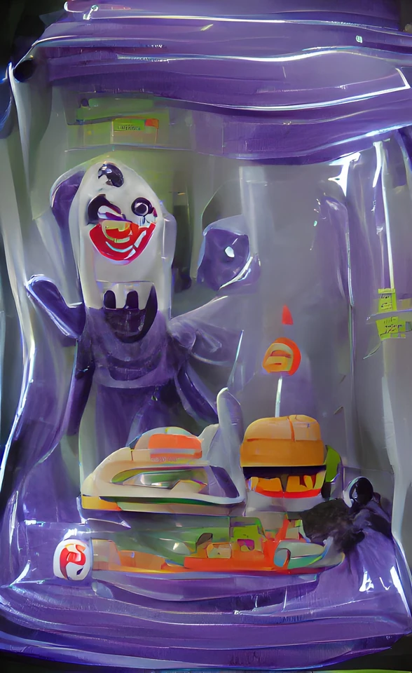
View original prompt card for Haunted scary happy meal

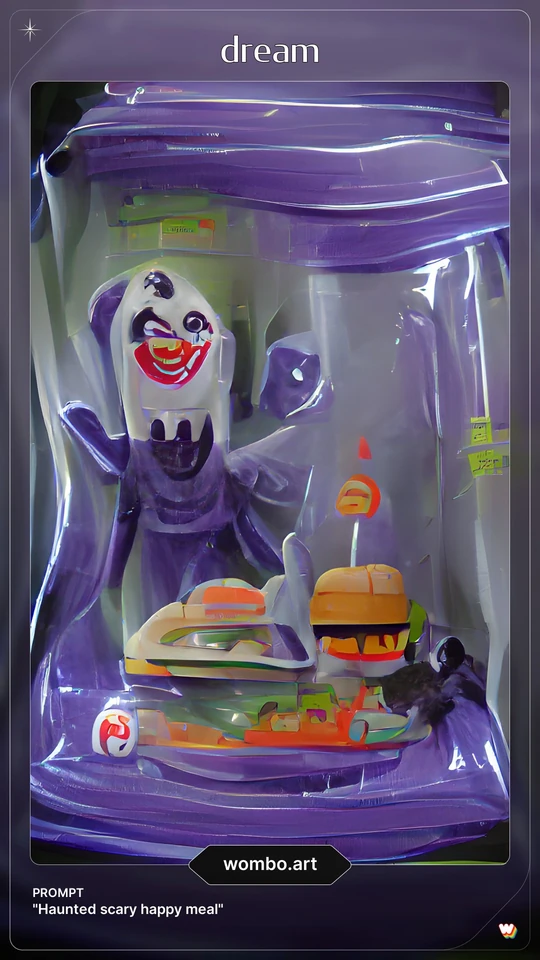

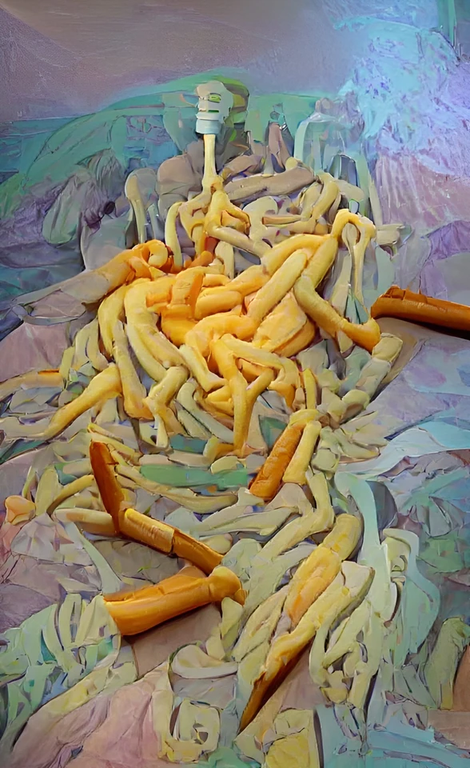
View original prompt card for French fry orgy

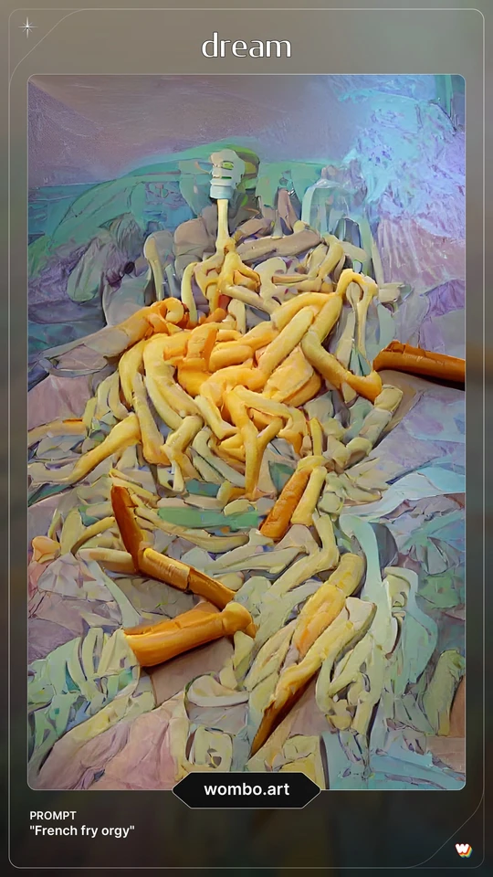

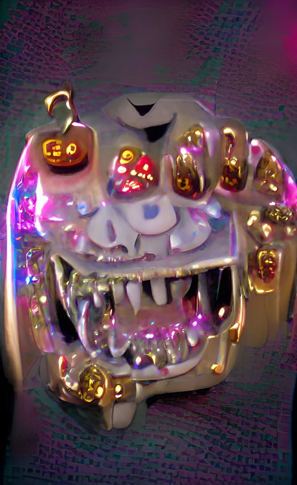
View original prompt card for Scary bling

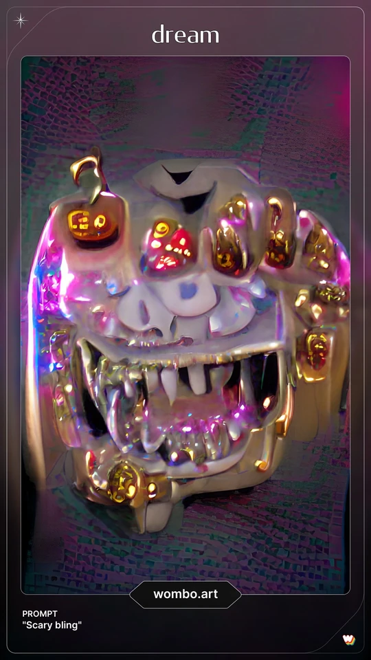

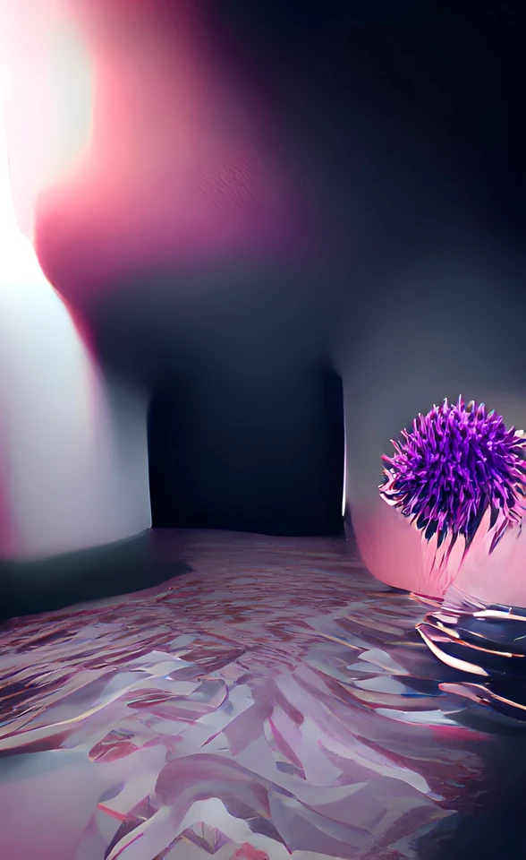
View original prompt card for Anhedonia

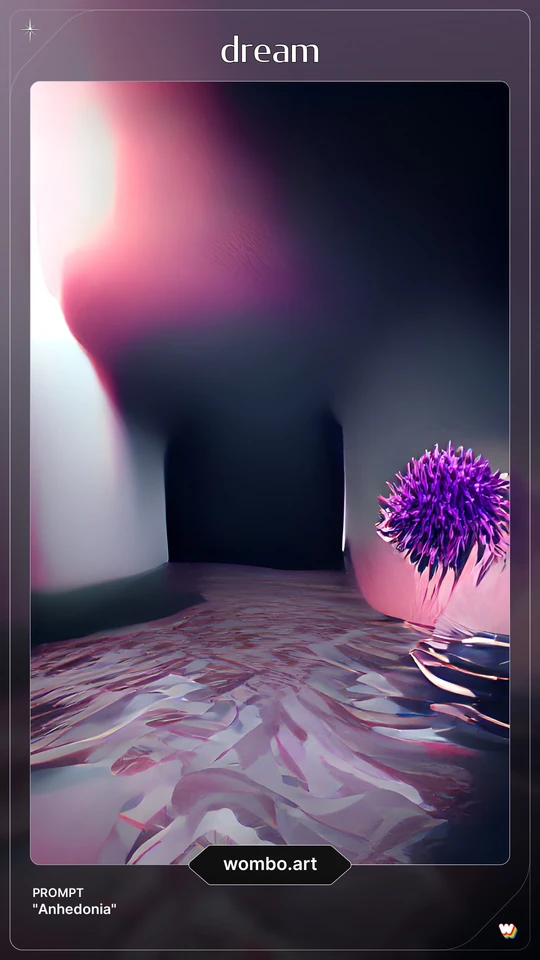

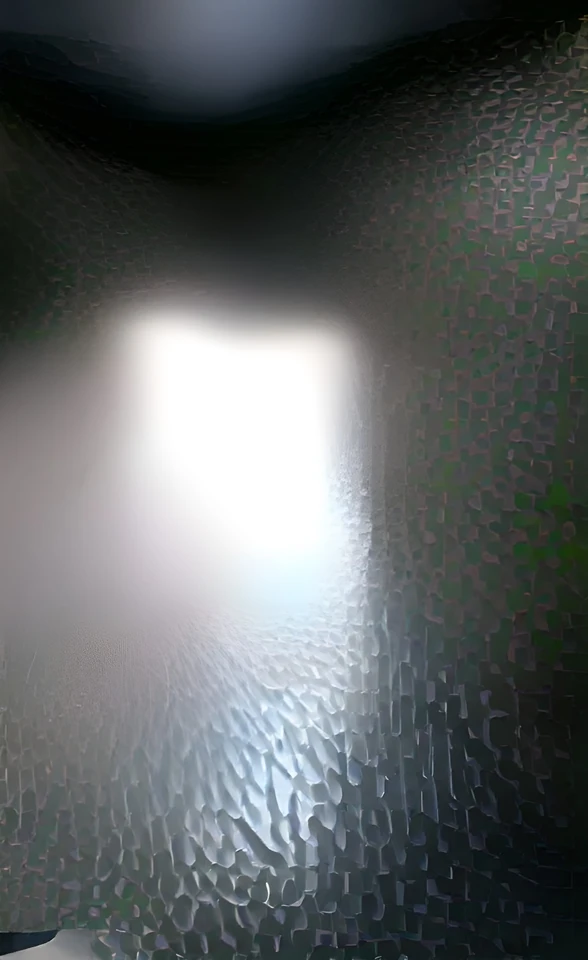
View original prompt card for My Life boredom

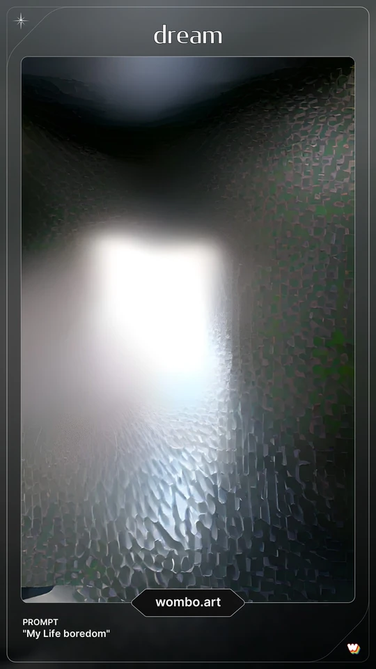